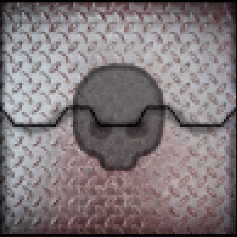
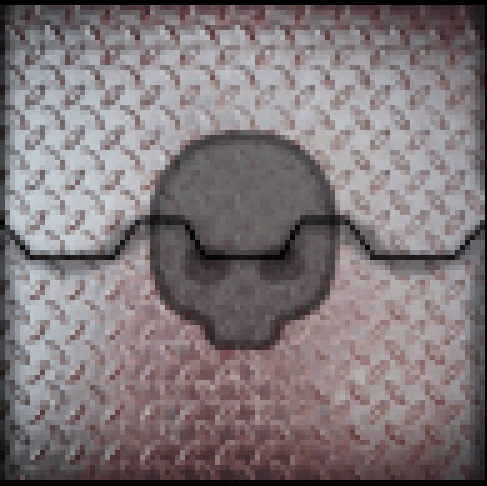

Devido a acusações de traição, o antigo oficial foi... Afastado do serviço, se é que podemos falar assim. Mas não se preocupe Oficial, se não quiser ter o mesmo final que o antigo teve, faça diferente, tome as decisões certas e as coisas vão dar certo no final, o Deus-Imperador garantirá que vai dar certo.
14° Comandante de Armas
Aqui tem tudo que um Sumo Oficial Fronteiriço precisa saber sobre naves e suas respectivas classificações, antes de permitir a passagem de algo é necessário comparar as características da nave presente na fronteira com as características de sua classe aqui escrita, a entrada só é permitida caso não haja diferença, caso contrário, ative as defesas planetárias e ordene a destruição imediata da nave, o descumprimento de suas ordens resultará em afastamento do cargo, redução do estato social de sua família e a acusação de traição, tenha em mente que apesar de ser uma acusação, ninguém foi capaz de se provar inocente, vale também mencionar que quando aberto o precesso de acusação, é iniciado simultaneamente uma ordem de localizar e destruir sobre você, ou seja, qualquer cidadão imperial tem o direito de te caçar e o dever de te executar caso tenham a chance.
Que o Deus-Imperador abencoe sua jornada de trabalho.
Classe Imperatoris
Canhões - Entre 100 até 200
Tamanho - Entre 8km por 2km até 10km por 5km
População - Entre 100 até 250 mil pessoas
Armamentos extras - Pode carregar torpedos, aríete, armas anti-projétil e canhões magnéticos
Pode transportar mercadorias? - Não
É necessário ter licença mercante para transportar mercadorias? - Não é permitido transporte de mercadorias
Pode ser da Frota Imperial? - Sim
É obrigatoriamente da Frota Imperial? - Sim
Pode ter armamento anti-planetário? - Deve ter
Classe Galeão
Canhões - Entre 80 até 100
Tamanho - Entre 4km por 2km até 6km por 3km
População - Entre 60 até 90 mil pessoas
Armamentos extras - Pode carregar torpedos, armas anti-projétil e um aríete
Pode transportar mercadorias? - Sim
É necessário ter licença mercante para transportar mercadorias? - Sim
Pode ser da Frota Imperial? - Sim
É obrigatoriamente da Frota Imperial? - Não
Pode ter armamento anti-planetário? - Somente com permissão imperial
Classe Cruzador Pesado
Canhões - Entre 90 até 100
Tamanho - Entre 4km por 2km até 6km por 3km
População - Entre 50 até 70 mil pessoas
Armamentos extras - Pode carregar torpedos, armas anti-projétil, aríete, canhões magnéticos e reator do tipo Último Recurso
Pode transportar mercadorias? - Não
É necessário ter licença mercante para transportar mercadorias? - Não é permitido transporte de mercadorias
Pode ser da Frota Imperial? - Sim
É obrigatoriamente da Frota Imperial? - Não
Pode ter armamento anti-planetário? - Somente com permissão imperial
Classe Cruzador
Canhões - Entre 60 até 80
Tamanho - Entre 3km por 2km até 4km por 2km
População - Entre 40 até 60 mil pessoas
Armamentos extras - Pode carregar torpedos, armas anti-projétil, aríete, canhões magnéticos e reator do tipo Último Recurso
Pode transportar mercadorias? - Não
É necessário ter licença mercante para transportar mercadorias? - Não é permitido transporte de mercadorias
Pode ser da Frota Imperial? - Sim
É obrigatoriamente da Frota Imperial? - Não
Pode ter armamento anti-planetário? - Não
Classe Cruzador Leve
Canhões - Entre 50 até 56
Tamanho - Entre 2km por 1km até 2km por 2km
População - Entre 40 até 60 mil pessoas
Armamentos extras - Pode carregar armas anti-projétil, aríete e reator do tipo Último Recurso
Pode transportar mercadorias? - Não
É necessário ter licença mercante para transportar mercadorias? - Não é permitido transporte de mercadorias
Pode ser da Frota Imperial? - Sim
É obrigatoriamente da Frota Imperial? - Não
Pode ter armamento anti-planetário? - Não
Classe Fragata
Canhões - Entre 60 até 70
Tamanho - Entre 2km por 1km até 2km por 2km
População - Entre 50 até 60 mil pessoas
Armamentos extras - Pode carregar armas carregar torpedos, anti-projétil e canhões magnéticos
Pode transportar mercadorias? - Não
É necessário ter licença mercante para transportar mercadorias? - Não é permitido transporte de mercadorias
Pode ser da Frota Imperial? - Sim
É obrigatoriamente da Frota Imperial? - Sim
Pode ter armamento anti-planetário? - Não
Classe Corveta
Canhões - Entre 40 até 50
Tamanho - Entre 1km por 1km até 2km por 2km
População - Entre 30 até 40 mil pessoas
Armamentos extras - Pode carregar armas carregar torpedos, anti-projétil e canhões magnéticos
Pode transportar mercadorias? - Não
É necessário ter licença mercante para transportar mercadorias? - Não é permitido transporte de mercadorias
Pode ser da Frota Imperial? - Sim
É obrigatoriamente da Frota Imperial? - Não
Pode ter armamento anti-planetário? - Não
Classe Raeda
Canhões - Transportadoras não podem ter armas
Tamanho - Entre 2km por 1km até 3km por 3km
População - Entre 60 até 100 mil pessoas
Armamentos extras - Transportadoras não podem ter armas
Pode transportar mercadorias? - Sim
É necessário ter licença mercante para transportar mercadorias? - Sim
Pode ser da Frota Imperial? - Sim
É obrigatoriamente da Frota Imperial? - Não
Pode ter armamento anti-planetário? - Transportadoras não podem ter armas
Naves genéricas (não necessitam de classificação específica)
Canhões - Entre 0 até 20
Tamanho - Entre 1km por 1km até 2km por 2km
População - Entre 20 até 30 mil pessoas
Armamentos extras - Naves genéricas não podem ter armas extras
Pode transportar mercadorias? - Sim
É necessário ter licença mercante para transportar mercadorias? - Não
Pode ser da Frota Imperial? - Não
É obrigatoriamente da Frota Imperial? - Não pode ser da Frota Imperial
Pode ter armamento anti-planetário? - Não
 



1